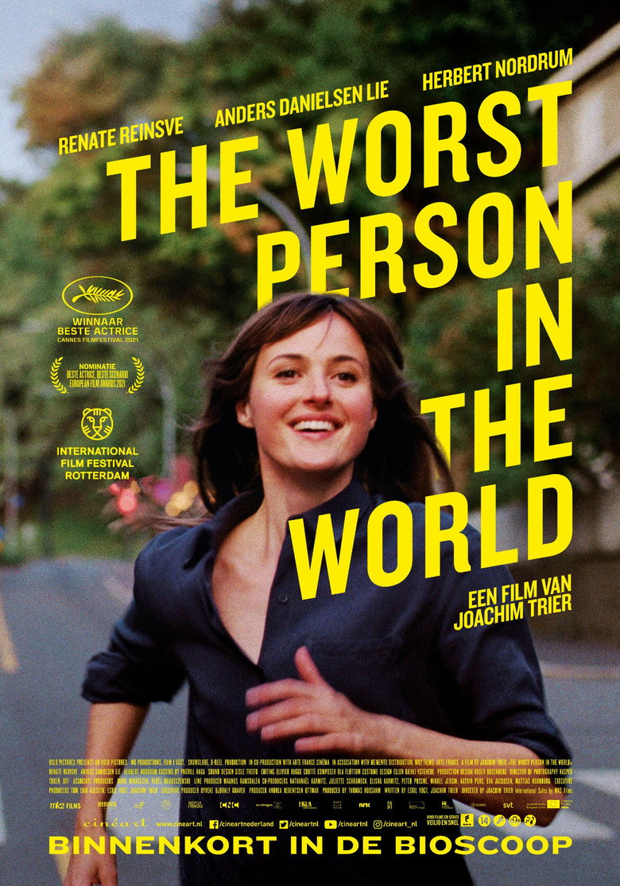

Fiche technique

Synopsis
Julie a commencé médecine — brillamment — avant de comprendre que c'était l'âme qui l'intéressait : psychologie, donc. Puis la photographie. Puis un travail alimentaire en librairie et des velléités d'écriture. À trente ans, elle vit avec Aksel, auteur de bande dessinée underground de quinze ans son aîné, qui voudrait des enfants ; elle, elle ne sait pas — c'est sa réponse à presque tout, et le film en fait une odyssée[1].
Un soir, Julie s'incruste dans un mariage inconnu et y rencontre Eivind, serveur de café, aussi doux qu'Aksel est cérébral. En douze chapitres, un prologue et un épilogue, le film suit quatre années de bifurcations — quitter, aimer, tromper, avorter de tous les futurs proposés — jusqu'à la maladie d'Aksel, qui donne soudain au temps de Julie un prix qu'aucun de ses choix ne lui avait donné[1][3].
Contexte de production
Le film clôt la « trilogie d'Oslo » que Joachim Trier a ouverte avec Nouvelle donne (Reprise, 2006) et poursuivie avec Oslo, 31 août (2011) — trois portraits de trentenaires dans la même ville, écrits avec le même complice, Eskil Vogt[1]. Après un détour par le fantastique (Thelma), Trier revient à sa matière première : le temps qui passe sur une génération surdiplômée et sous-décidée.
Le pari du casting est décisif : Renate Reinsve, actrice de théâtre cantonnée aux seconds rôles (une réplique dans Oslo, 31 août), reçoit ici son premier grand rôle — écrit à sa mesure — et repart de Cannes avec le prix d'interprétation féminine[1][3]. Face à elle, Anders Danielsen Lie — l'acteur-fétiche des trois volets, médecin dans le civil — et Herbert Nordrum. Tourné à Oslo en 2020 pour environ 5 millions d'euros, le film est présenté en compétition à Cannes en juillet 2021, où il devient l'un des événements du festival[1].
Structure narrative
Le dispositif du titre est un manifeste : un prologue, douze chapitres titrés, un épilogue — la vie d'une indécise mise en pages comme un roman qu'elle n'arrive pas à écrire. La voix off romanesque et les intertitres donnent au film sa « noblesse romanesque », selon Le Rayon Vert — qui y voit aussi, en procès instruit à charge, une forme cherchant à « légitimer l'ambition artistique » du cinéaste[2]. Défense recevable : le chapitrage épouse exactement le rapport de Julie au temps — une vie vécue comme une table des matières dont on saute les chapitres ennuyeux.
Les chapitres jouent chacun leur registre — comédie de mœurs, essai (le chapitre-tract sur « le sexe oral à l'ère de #MeToo » que Julie publie), trip sous champignons, mélodrame terminal — et deux séquences font charnière : la course de Julie à travers un Oslo figé, parenthèse fantastique où elle quitte Aksel pour Eivind entre deux battements du monde ; et son inversion exacte à l'épilogue, Julie immobile derrière sa fenêtre, photographiant à distance la vie ordinaire qu'elle n'a pas choisie[1][2].
Mise en scène et procédés techniques
La photographie de Kasper Tuxen filme Oslo comme une saison mentale — étés blonds, aubes roses sur le fjord, appartements en demi-jour — et la caméra de Trier garde sa signature : fluidité classique soudain interrompue par des échappées formelles. La séquence de la ville figée est déjà une anthologie : des dizaines de figurants immobilisés en pleine rue (effet obtenu pour l'essentiel en plateau, pas en numérique), et Julie qui court, souriante, à travers l'arrêt du monde — l'euphorie amoureuse comme suspension du temps des autres[1].
Le trip aux champignons hallucinogènes offre le contre-champ grotesque — corps déformés, père absent, tampon jeté à la figure du patriarcat — où le film ose une laideur cartoonesque assumée. Et la voix off, jamais explicative, travaille en léger décalage ironique avec l'image, à la manière des romanciers que le dispositif convoque. La critique française a salué cette « fausse comédie romantique et vrai film psychologique » qui « joue sur les sentiments » avec une précision d'orfèvre[3].
Personnages principaux
Julie (Renate Reinsve) est le grand portrait féminin du cinéma européen récent : ni héroïne ni « pire personne du monde » — le titre norvégien est une expression d'autodépréciation —, mais une femme dont l'indécision est à double fond. Le Rayon Vert la résume d'une formule : « elle veut être artiste, elle ne sait juste pas dans quel art exactement »[2] — et Reinsve joue chaque hésitation comme un choix plein, avec une présence qui a immédiatement fait d'elle une star européenne[3].
Aksel (Anders Danielsen Lie, bouleversant) est l'artiste installé — auteur d'une BD culte et politiquement indéfendable — à qui le film confie ses plus belles scènes : le monologue du mourant sur la culture qu'il a aimée « quand les objets existaient encore » est devenu instantanément classique. Eivind (Herbert Nordrum) incarne la tendresse sans projet — l'homme ordinaire que la critique la plus sévère du film estime « condamné à se faire maltraiter » pour « crime de lèse-artiste »[2] : lecture discutable, mais qui dit bien la hiérarchie sentimentale que le film met en scène — et interroge.
Thèmes
Le thème-titre est l'indécision comme condition générationnelle : Julie appartient à la première génération pour qui tout est théoriquement possible — études, métiers, amours, genres de vie — et le film demande ce que devient une existence quand choisir, c'est mourir à toutes les autres versions de soi. Les douze chapitres sont autant de vies essayées puis rendues, et l'ironie du dispositif romanesque est là : la seule chose que Julie n'écrit jamais, c'est son propre récit.
Vient ensuite le temps — obsession de toute la trilogie d'Oslo : temps biologique (l'horloge des enfants, explicitée dès le prologue), temps culturel (Aksel, homme des objets — vinyles, papier — face au flux), temps de la mort enfin, qui requalifie tout. Et, en basse continue, une méditation sur l'art et la vie ordinaire : le film privilégie-t-il ses artistes contre ses gens simples, comme le soutient Le Rayon Vert[2] ? Ou montre-t-il, à travers l'épilogue — Julie seule, photographe enfin, cadrant la vie des autres —, le coût exact de la position d'observatrice ? La force du film est de laisser la question ouverte : c'est un portrait, pas un verdict[3].
Réception critique et postérité
Sensation de Cannes 2021 : prix d'interprétation pour Reinsve, et une presse mondiale conquise — « un classique instantané » (Peter Bradshaw, The Guardian), meilleur film de l'année pour Vanity Fair, 91 sur Metacritic[1]. Le consensus critique le dit bien :
« Une comédie romantique qui subvertit délicieusement les conventions les plus usées du genre. » Consensus Rotten Tomatoes, cité par Wikipédia[1]
Deux nominations aux Oscars (film international et — plus rare pour un film nordique — scénario original) couronnent la carrière du film, devenu pour 12,7 millions de dollars de recettes un vrai succès d'art et essai international[1]. La France l'a débattu plus qu'ailleurs — des éloges d'avoir-alire et du Bleu du Miroir au réquisitoire du Rayon Vert contre sa « misanthropie » d'artiste[2][3] — signe généralement fiable qu'un film touche un nerf. Postérité immédiate : Reinsve tourne désormais dans le monde entier, et « julie-core » est devenu un raccourci critique pour tout portrait de trentenaire indécise — l'hommage lexical que le cinéma réserve aux personnages devenus archétypes.
Conclusion
Julie (en 12 chapitres) réussit le film le plus difficile qui soit : celui dont l'héroïne ne veut rien de précis. Là où le récit classique exige un désir moteur, Trier et Vogt construisent leur dramaturgie sur l'esquive elle-même — et trouvent dans la forme romanesque le moyen de donner à l'indécision une architecture, un humour et, in fine, une gravité. Que le dispositif frôle parfois la coquetterie, ses détracteurs n'ont pas tort ; mais c'est le prix d'un pari tenu.
Reste l'épilogue, d'une intelligence discrète : Julie photographe, seule et sans drame, cadrant une actrice qui rentre retrouver sa famille — la vie des autres devenue son objet, au sens propre. Ni punition ni triomphe : une position dans le monde, la première qu'elle occupe entière. « La pire personne du monde » aura mis douze chapitres à devenir quelqu'un — c'est-à-dire, le film le sait mieux que quiconque, exactement le temps que cela prend.
Sources
- Wikipédia (en) — « The Worst Person in the World (film) » : production (Trier/Vogt, Tuxen, Oslo 2020, budget), structure (prologue + 12 chapitres + épilogue), séquences (ville figée, champignons), Cannes 2021 et prix d'interprétation, nominations aux Oscars, sorties (France 13 octobre 2021), box-office, citations critiques (Bradshaw, Vanity Fair, consensus RT). en.wikipedia.org
- Le Rayon Vert — « Julie (en 12 chapitres) de Joachim Trier : Analyse » : lecture critique du dispositif (chapitrage comme légitimation), de la hiérarchie artiste/homme ordinaire (Aksel/Eivind), de la ville figée et de l'épilogue inversé. rayonvertcinema.org
- Presse française consultée via recherche web (avoir-alire, Le Bleu du Miroir, Le Blog du Cinéma, Critikat) : trilogie d'Oslo, premier grand rôle de Renate Reinsve, « fausse comédie romantique et vrai film psychologique », portrait générationnel. lebleudumiroir.fr
- The Movie Database (TMDB) — fiche du film (données factuelles, affiche). themoviedb.org/movie/660120